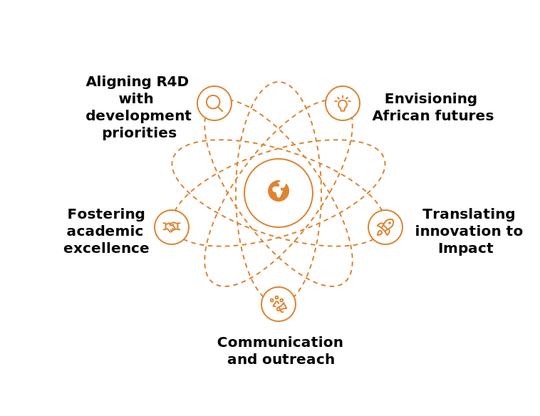

Our Workstreams
Driving Africa’s Development Through Strategic Focus Areas
Our Strategic Workstreams
Workstream 1: Aligning Research Agendas to Socio-Economic Priorities
We facilitate the alignment of UM6P’s research for development (R4D) with Africa’s sustainable development goals (SDGs) and continental priorities, such as the African Union’s Agenda 2063. In partnership with OCP Group, we connect academic research to on-the-ground challenges like sustainable agriculture and resource management. Our efforts include hosting annual summits to map research to stakeholder needs and curating a digital hub for priority alignment.
Workstream 2: Envisioning African Futures in Science, Technology & Education
As a think tank, we envision bold futures for Africa by fostering dialogue on science, technology, and education. Initiatives include the “Africa Futures Forum,” where UM6P researchers and African leaders explore scenarios for 2050, and publications like the “Africa Innovation Outlook.” We integrate indigenous knowledge with modern innovation to shape sustainable, forward-thinking solutions.
Workstream 3: Fostering Academic Excellence Through Partnerships and Networks
We strengthen UM6P’s academic leadership by building networks with African and global institutions, such as the “100 PhDs for Africa” program with EPFL. Our work fosters interdepartmental collaboration within UM6P—e.g., linking agriculture and tech departments—and coordinates partnerships with OCP to enhance educational impact. Annual events connect 50+ institutions to share resources and expertise.
Workstream 4: Translating Innovation into Impact
In collaboration with UM6P’s entrepreneurial ecosystem (e.g., Stargate incubator) and OCP’s field operations, we enable innovations to solve real-world African challenges. Activities include “Innovation Bridge Events” that connect researchers and startups with implementers, and facilitating access to testing facilities like the Green Energy Park. Our goal is to broker 10+ impactful solutions by 2027.
Workstream 5: Communication and Outreach
We amplify the impact of our initiatives by fostering communication and outreach across Africa, engaging stakeholders through events, publications, and digital platforms to ensure our work reaches and benefits communities continent-wide.
Explore More
See how our workstreams are making a difference across Africa.
View Our collaborators